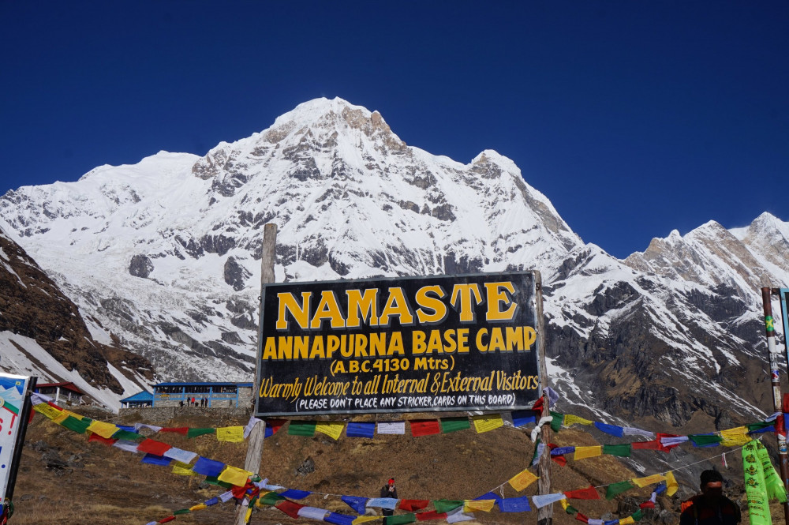

The ABC trek, or Annapurna Base Camp trek, is a popular trekking experience in Nepal that offers breathtaking views of the Himalayas. It typically takes 12 days to complete, starting from Kathmandu and passing through terraced farmland, Gurung villages, and dense rhododendron forests before reaching the Annapurna Sanctuary, which is surrounded by some of the world's highest peaks. This trek is accessible for beginners and provides a rewarding experience with stunning scenery and cultural encounters.